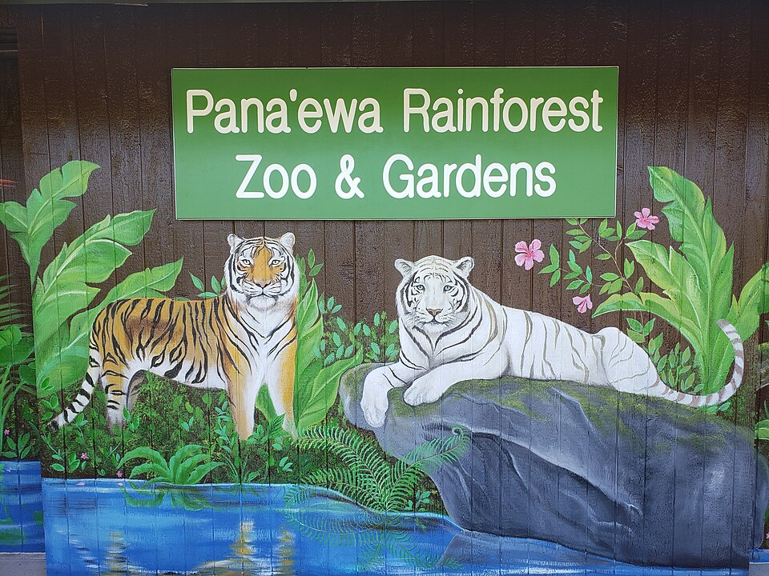

Panaʻewa Rainforest Zoo & Gardens
Place: Panaʻewa Rainforest Zoo & Gardens, South Hilo District, Hawaiʻi Island
Type: Rainforest zoo and botanical garden
Namesake: The historic Panaʻewa Forest, traditionally interpreted as "crooked bow" or "curved shooting place"
Story it tells: How one of Hawaiʻi's oldest sacred forests evolved into the nation's only naturally tropical rainforest zoo while preserving an ancient Hawaiian place name.

Visitors know Panaʻewa Rainforest Zoo & Gardens as a free family attraction home to tropical animals, lush gardens, and the only naturally tropical rainforest zoo in the United States. Before the zoo opened in 1978, this landscape formed part of the ancient Panaʻewa Forest, a place woven into Hawaiian tradition, mythology, and the cultural life of East Hawaiʻi.
The name Panaʻewa is traditionally interpreted as meaning "crooked bow" or "curved shooting place," reflecting an area associated with archery or hunting in earlier times. Hawaiian tradition also preserves the name through the legendary moʻo Panaʻewa, a powerful lizard deity who ruled the dense rainforest until being defeated by Hiʻiaka, the beloved sister of Pele, during her legendary journey across Hawaiʻi Island. The story transformed the forest into a celebrated place remembered in Hawaiian oral tradition.
For Native Hawaiians, Panaʻewa was regarded as a wao akua, the realm of the gods, where people entered only with proper respect and ceremony. The rainforest provided prized maile vines for hula, medicinal plants for healing, koa and ʻōhiʻa timber for canoes, and native birds whose beautiful feathers adorned the cloaks and helmets of Hawaiʻi's aliʻi. Gathering these resources followed strict cultural protocols that reflected the forest's sacred character.
Western contact dramatically reshaped the landscape and carved up the forest. Logging supplied lumber and fuel for Hilo's growing community and nearby sugar plantations, while introduced animals and invasive plants devastated the native ecosystem. Portions of the surrounding forest later became Hawaiian Home Lands, agricultural fields, commercial development, and transportation corridors, leaving only small fragments of the once-vast rainforest.
In 1978, Hawaiʻi County relocated its small zoo from tsunami-prone Onekahakaha Beach Park to a safer site within the Panaʻewa Forest Reserve. Surrounded by towering rainforest trees, the new facility became a natural setting for tropical wildlife while preserving the area's historic place name. Botanical collections were later expanded, leading to the facility's current name, Panaʻewa Rainforest Zoo & Gardens.
Today the zoo welcomes thousands of visitors each year while continuing to educate the public about wildlife, conservation, and Hawaiʻi's tropical ecosystems. Its location serves as a reminder that beneath the animal exhibits lies a landscape whose history stretches far beyond the modern attraction.
The name Panaʻewa connects today's visitors with an older Hawaiʻi, a rainforest of legends, sacred gathering places, skilled birdcatchers, and cultural traditions that flourished before the zoo opened.